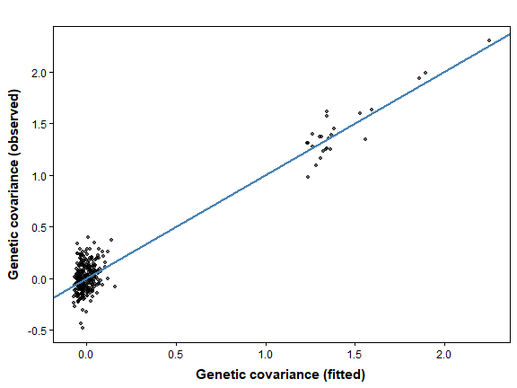

10. Simulating Covariance Data to Plan a Study
Bill Peterman
Source:vignettes/v10-simulation-design.Rmd
v10-simulation-design.RmdThe displayed results and figures in this guide were computed from
the executable R Markdown source shipped with the package. Routine
package checks use these precomputed results to keep the CRAN check time
modest. To rerun every code chunk, copy
system.file("vignette-source", "v10-simulation-design.Rmd", package = "terradish")
to a writable directory and render that copy with
rmarkdown::render().
Goal. Simulate a response under stated assumptions, compare sampling designs with a small power sweep, and read the resulting tables.
The data-generation guide
explains the landscapes, SLiM histories, sampling, and matched markers
used in these examples. Open it in R with
vignette("v12-data-generation", package = "terradish").
How many ponds would you sample?
Suppose field effort allows visits to 12, 18, or all 24 candidate
ponds, and before sampling you want to know whether those designs can
recover a specified forest association. This guide sets up that question
on the Ohio pond landscape from vignette("v01-getting-started", package = "terradish").
The response is drawn directly from a covariance model. These are new statistical draws, not the SLiM SNPs or microsatellites. They give a fast check of recovery when the analysis model is correct, whereas SLiM generates ancestry and mutations through a biological process that need not obey the fitted likelihood.
The guide first runs one draw and one fit, then a reduced design sweep that is small enough to compute here. One successful fit cannot establish statistical power, interval coverage, or field sample size, and the reduced sweep shows how to read the tables, not how many ponds a real study needs.
Keep the landscape and specify a new response
library(terradish)
library(terra)
data(ohio_ponds)
ponds <- ohio_ponds$ponds
# Reuse the forest context, full graph, and candidate pond locations.
# saveStack retains the raster needed when designs subset focal ponds.
x <- scale_covariates(c(unwrap(ohio_ponds$forest500),
unwrap(ohio_ponds$covariates)[["slope"]]))
surface <- conductance_surface(x, ponds[c("x", "y")],
directions = 8, saveStack = TRUE)
c(candidate_ponds = length(surface$demes), resolution_m = res(x)[1])
#> candidate_ponds resolution_m
#> 24 100
# A declared one-SD association, not an estimate from the SLiM data.
theta_true <- c(forest500 = 0.6)
tau_true <- 2
variance_true <- 1How to read the setup. Each design selects ponds
from the same 24 candidates while retaining routes through the full 100
m landscape. The forest coefficient 0.6 implies a conductance ratio of
exp(0.6), about 1.82, per standard deviation of forest
context. Fixing context at 500 m isolates the site-design question from
scale estimation.
The simulator uses
Here
is graph covariance,
weights it, and
is additional diagonal variance. The sigma argument of the
simulation call takes
itself, but the fitted measurement parameter named sigma is
.
Neither is the Gaussian raster-smoothing scale.
Generating with nu = 100 sets how noisy each simulated
response is, not how many SNPs would supply that information. The
simulator requires nu of at least the number of sampled
ponds (24 here).
Generate once and inspect recovery
# One simulated covariance among all 24 ponds, then one fit to it.
sim <- simulate_covariance_response(theta_true, ~ forest500, surface,
tau = tau_true, sigma = variance_true, nu = 100, seed = 1)
control <- NewtonRaphsonControl(maxit = 200, ctol = 1e-8, ftol = 1e-8)
fit <- terradish(sim$covariance ~ forest500, surface,
measurement_model = wishart_covariance, nu = 100,
optimizer = "bfgs", control = control)
stopifnot(fit$convergence$code == 0,
fit$fit$subproblem$convergence == 0)
rbind(generating = theta_true, estimated = coef(fit))
#> forest500
#> generating 0.6000000
#> estimated 0.5924285
confint(fit)
#> 2.5 % 97.5 %
#> forest500 0.3257009 0.8591562How to read the output. The estimated forest
coefficient is 0.59, against the generating 0.6, and its 95% interval
(0.33 to 0.86) contains the true value. Only a design sweep can estimate
how often such intervals do. When you run these calls, R warns “Removed
unused spatial covariates: slope” each time a formula leaves
slope out. The warning is harmless here, because
slope stays in the raster stack for the two-covariate
candidate fitted below. This guide hides warnings in its displayed
output.
plot(fit, type = "fit")
How to read the plot. The upper cluster holds the 24
pond variances and the lower cluster the covariances between ponds. The
blue line is a least-squares fit, not the 1:1 line. Most visual
agreement comes from separating variances from covariances, so judge the
fit within the lower cluster.
plot(fit, type = "marginal", data = surface) shows the
fitted forest-conductance curve for comparison with
exp(0.6 * x).
Compare site designs without changing the question
Before a design sweep, choose a recovery target, plausible effect
sizes, a range of information assumptions, and a computation budget. The
sweep below compares spatially spread ("spacefill") and
randomly selected ponds. sample_sizes counts
ponds, not animals per pond or loci, so the helper does
not simulate the benefit of collecting 15 versus 30 animals at a
pond.
# A reduced sweep: 30 simulated responses per design keep this guide quick
# to build. Use nsim = 200 or more for a real study (see the fit count below).
# Both candidate models are fitted to the same response in each replicate.
sweep_seconds <- system.time(
power <- covariance_response_power(
theta = theta_true, formula = ~ forest500, data = surface,
sample_sizes = c(12, 18, 24), strategies = c("spacefill", "random"),
fit_models = list(forest = list(formula = ~ forest500),
forest_slope = list(formula = ~ forest500 + slope)),
tau = tau_true, sigma = variance_true,
nu = 100, nu_fit = 100, nsim = 30, n_designs = 2, seed = 905,
optimizer = "bfgs", cores = 1, control = control)
)[["elapsed"]]
# Scenario-level summary: fitting success, surface recovery, model selection.
scenario <- power$summary[, c("strategy", "sample_size", "model", "n_replicates",
"fit_rate", "conductance_power", "selected_AIC_rate")]
print(scenario[order(scenario$model, scenario$strategy, scenario$sample_size), ],
digits = 2, row.names = FALSE)
#> strategy sample_size model n_replicates fit_rate conductance_power selected_AIC_rate
#> random 12 forest 60 1.00 1.00 0.87
#> random 18 forest 60 1.00 1.00 0.82
#> random 24 forest 60 1.00 1.00 0.82
#> spacefill 12 forest 30 0.90 0.77 0.73
#> spacefill 18 forest 30 1.00 1.00 0.83
#> spacefill 24 forest 30 1.00 1.00 0.90
#> random 12 forest_slope 60 0.98 0.27 0.13
#> random 18 forest_slope 60 1.00 0.32 0.18
#> random 24 forest_slope 60 1.00 0.33 0.18
#> spacefill 12 forest_slope 30 0.90 0.17 0.20
#> spacefill 18 forest_slope 30 1.00 0.37 0.17
#> spacefill 24 forest_slope 30 1.00 0.43 0.10How to read the scenario table.
n_replicates is the denominator of every rate in its row,
so read it first. Space-filling selection is deterministic: each sample
size has one space-filling design, evaluated on nsim = 30
simulated responses. n_designs = 2 multiplies only the
random designs, which therefore have 60 replicates. At 24 ponds both
strategies use every candidate pond, so those rows describe the same
design and differ only through their simulated draws.
Read fit_rate next, because failed fits are part of the
assessment, not rows to discard. Here it ranges from 0.90 to 1.00 across
all rows. conductance_power is the fraction of replicates
whose fitted surface correlates with the generating surface above 0.9.
For the forest model with space-filling designs it is 0.77,
1.00, and 1.00 at 12, 18, and 24 ponds. Slope has no generating effect,
so selected_AIC_rate shows how often AIC prefers unneeded
structure: with space-filling designs the forest_slope
model ranks first in 0.20, 0.17, and 0.10 of replicates at the three
sample sizes.
# Parameter-level summary for the forest coefficient (generating value 0.6).
recovery <- power$parameter_summary[, c("strategy", "sample_size", "model",
"n_replicates", "power", "coverage", "bias", "rmse")]
# Monte Carlo standard error of each power estimate, from its own denominator.
recovery$mc_se <- sqrt(recovery$power * (1 - recovery$power) / recovery$n_replicates)
print(recovery[order(recovery$model, recovery$strategy, recovery$sample_size), ],
digits = 2, row.names = FALSE)
#> strategy sample_size model n_replicates power coverage bias rmse mc_se
#> random 12 forest 60 0.65 0.95 -0.0039 0.27 0.062
#> random 18 forest 60 0.97 0.97 0.0308 0.17 0.023
#> random 24 forest 60 1.00 0.95 0.0179 0.19 0.000
#> spacefill 12 forest 30 0.40 0.77 0.4169 1.30 0.089
#> spacefill 18 forest 30 0.93 1.00 0.0251 0.19 0.046
#> spacefill 24 forest 30 1.00 0.93 -0.0070 0.15 0.000
#> random 12 forest_slope 60 0.68 0.92 -0.0010 0.36 0.060
#> random 18 forest_slope 60 0.97 0.97 0.0247 0.16 0.023
#> random 24 forest_slope 60 1.00 0.98 0.0142 0.19 0.000
#> spacefill 12 forest_slope 30 0.20 0.80 0.4309 1.70 0.073
#> spacefill 18 forest_slope 30 0.83 1.00 0.0783 0.29 0.068
#> spacefill 24 forest_slope 30 1.00 0.97 -0.0033 0.14 0.000How to read the parameter table. Each row describes
the forest coefficient under one design and one fitted model.
power is the fraction of replicates that detect the
generating sign at the 0.05 level, and coverage is the
fraction of intervals that contain 0.6. For the forest
model with space-filling designs, power is 0.40, 0.93, and 1.00 at 12,
18, and 24 ponds, with coverage of 0.77, 1.00, and 0.93. The same model
with random designs has power of 0.65 and 0.97 at 12 and 18 ponds. Root
mean squared error for the space-filling forest rows is
1.30, 0.19, and 0.15.
The mc_se column is
,
with
taken from n_replicates. Its largest value here is 0.089,
so this reduced sweep cannot resolve differences in power smaller than
about 0.18 (two standard errors). Treat smaller gaps between rows as
noise, and increase nsim before you rank designs that
close.
What the sweep says about the opening question.
Under these declared assumptions, 12 ponds are too few. Either strategy
detects the forest association in about two thirds of replicates or
fewer, and the space-filling design at 12 ponds also loses fits, covers
the true value less often than the nominal 95%, and has a much larger
error than any other row, which signals unstable estimates. At 18 and 24
ponds power exceeds 0.9, and the gap between those two sizes is within
Monte Carlo error. Of the three designs, 18 ponds is therefore the
smallest that recovers this association reliably. That answer holds only
for this effect size, this nu, and a correctly specified
model, so repeat the sweep across the plausible range of each before you
commit field effort.
What the sweep cost. It fitted 540 models (3 sample
sizes, 90 simulated responses each, 2 candidate models) in about 14
minutes on one core of the machine that built this guide. The same call
with nsim = 200 fits 3,600 models and takes roughly seven
times as long. Start with nsim = 5 to check runtime and
failures, then increase replication.
The tables carry more columns than the two prints show:
| Quantity | Meaning | Decision it supports |
|---|---|---|
n_replicates |
Number of fits behind each rate in the row | How precise is every other column? |
fit_rate |
Fraction of attempted fits that converge | Is the proposed design numerically usable? |
Parameter power
|
Fraction of attempts detecting the generating sign at the stated threshold | Is the specified association detected often enough? |
correct_sign_rate, significant_rate
|
The two parts of power: the right sign, and
significance |
Does low power come from wrong signs or wide intervals? |
all_parameter_power |
Fraction of replicates detecting every generating parameter at once | Is the whole specified model recovered? |
bias, rmse
|
Average signed error and root mean squared error | Are estimates accurate as well as detectable? |
coverage |
Fraction of available intervals containing the generating value | Is uncertainty calibrated among the intervals being summarized? |
conductance_power |
Fraction recovering the spatial surface above the specified correlation threshold | Is the fitted surface pattern recovered? |
mean_conductance_cor |
Average correlation between fitted and generating surfaces | How close is the typical fitted surface? |
selected_AIC_rate, selected_AICc_rate
|
Frequency a candidate ranks first in this candidate set | Does model comparison favor the generating association? |
Check denominators alongside these summaries. Failed or boundary fits count as non-detections in parameter power, while bias and coverage depend on available estimates and intervals. High nominal power with poor coverage is not a sound design. Surface correlation measures relative spatial pattern, not absolute conductance or movement.
Separate data information from assumed precision
nu sets the variability of the generated data, and
nu_fit sets the information assumed when fitting. Raising
only nu_fit narrows reported intervals without improving
the data. Compare the two explicitly:
# One design (18 space-filling ponds), fitted twice to the same draws:
# once with the generating nu, once assuming ten times the information.
design <- list(theta = theta_true, formula = ~ forest500, data = surface,
sample_sizes = 18, strategies = "spacefill",
tau = tau_true, sigma = variance_true, nu = 100,
nsim = 50, seed = 905, optimizer = "bfgs", cores = 1, control = control)
matched <- do.call(covariance_response_power, design)
overstated <- do.call(covariance_response_power,
c(design, list(nu_fit = 1000)))
information <- rbind(matched = matched$parameter_summary,
overstated = overstated$parameter_summary)
print(information[, c("n_replicates", "fit_rate", "power", "coverage",
"mean_estimate", "rmse")], digits = 3)
#> n_replicates fit_rate power coverage mean_estimate rmse
#> matched 50 1 0.78 0.92 0.614 0.25
#> overstated 50 1 1.00 0.38 0.614 0.25How to read this comparison. Both runs use the same
seed, so they fit the same 50 simulated responses. Assuming ten times
the information changes power from 0.78 to 1.00 and coverage from 0.92
to 0.38, while the mean estimate is 0.614 and 0.614. Overstated
precision narrows the intervals without moving the estimates, so compare
recovery, coverage, and fitting success together. Neither setting
establishes the effective nu of the bundled SNP panel.
What can you take to the field?
Report performance across plausible weak and strong associations
instead of choosing the scenario that makes the smallest sample
sufficient. For a proportion estimated from
independent replicates, approximate Monte Carlo standard error is
.
Take
from the n_replicates column of the row you are reading:
with
the error is about 0.073 for 30 replicates, 0.052 for 60, and 0.028 for
200. Reused site designs add another layer to consider when summarizing
uncertainty across a sweep.
Save settings, seeds, all fit outcomes, package versions, and the complete assessment object. Keep graph resolution, buffer, and forest scaling fixed when comparing site counts. If the goal includes choosing a scale or spline complexity, simulate and evaluate that selection procedure too.
Quick reference: one draw, one fit, one small sweep
library(terradish)
library(terra)
data(ohio_ponds)
# 1. Keep the full landscape and every candidate site in one graph.
x <- scale_covariates(c(unwrap(ohio_ponds$forest500),
unwrap(ohio_ponds$covariates)[["slope"]]))
graph <- conductance_surface(x, ohio_ponds$ponds[c("x", "y")], directions = 8)
ctl <- NewtonRaphsonControl(maxit = 200, ctol = 1e-8, ftol = 1e-8)
# 2. Draw one response under declared values and check that one fit recovers it.
sim <- simulate_covariance_response(c(forest500 = 0.6), ~ forest500, graph,
tau = 2, sigma = 1, nu = 100, seed = 1)
fit <- terradish(sim$covariance ~ forest500, graph,
measurement_model = wishart_covariance, nu = 100,
optimizer = "bfgs", control = ctl)
confint(fit) # does the interval contain 0.6?
# 3. Sweep sample sizes and strategies; start small, then raise nsim.
power <- covariance_response_power(
theta = c(forest500 = 0.6), formula = ~ forest500, data = graph,
sample_sizes = c(12, 18, 24), strategies = c("spacefill", "random"),
fit_models = list(forest = list(formula = ~ forest500),
forest_slope = list(formula = ~ forest500 + slope)),
tau = 2, sigma = 1, nu = 100, nu_fit = 100,
nsim = 5, n_designs = 2, seed = 905,
optimizer = "bfgs", cores = 1, control = ctl)
power$summary # n_replicates and fit_rate first
power$parameter_summary # power, coverage, bias, and rmse per designSummary of key functions
| Function | Purpose |
|---|---|
conductance_surface() |
Retain the landscape and candidate focal sites |
simulate_covariance_response() |
Draw one response under declared statistical assumptions |
terradish() |
Fit and inspect one draw before a larger assessment |
covariance_response_power() |
Compare recovery across specified sampling designs |
See also
-
vignette("v01-getting-started", package = "terradish"): the SLiM deme example and matched marker panels. -
vignette("v02-wishart-covariance", package = "terradish"): response geometry and effective information. -
vignette("v04-model-comparison", package = "terradish"): selection and prediction are different assessments. -
vignette("v08-ibe-ibr-workflow", package = "terradish"): a simulated response with a known environmental component. -
vignette("v11-large-landscapes", package = "terradish"): solver settings when a design sweep requires many fits.